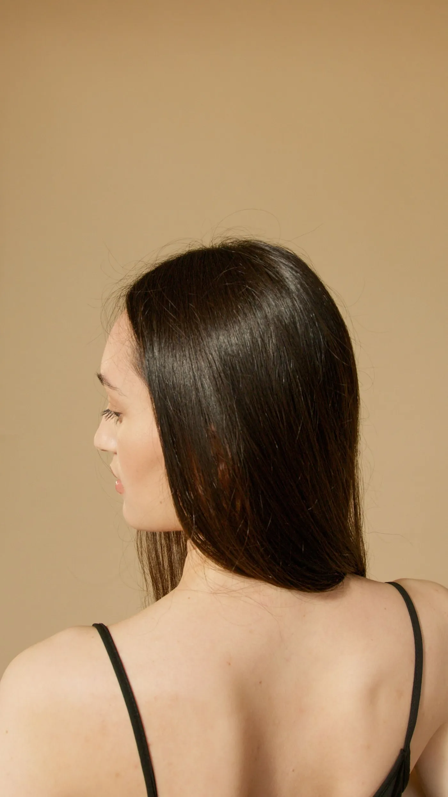
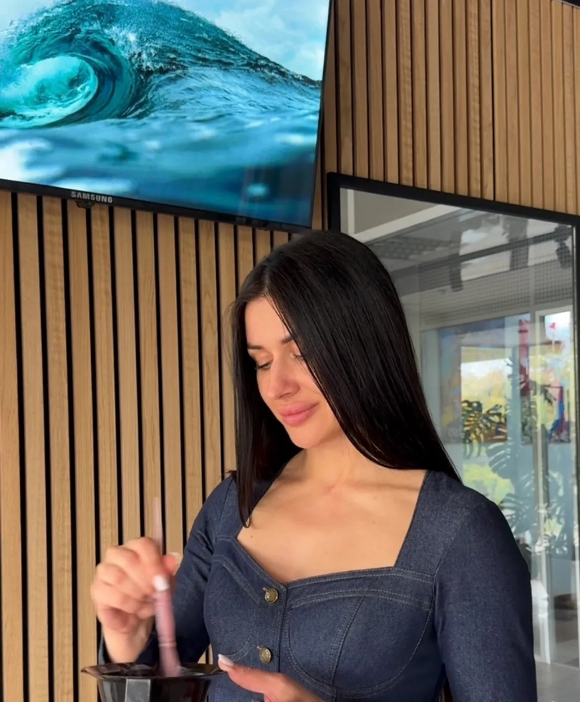
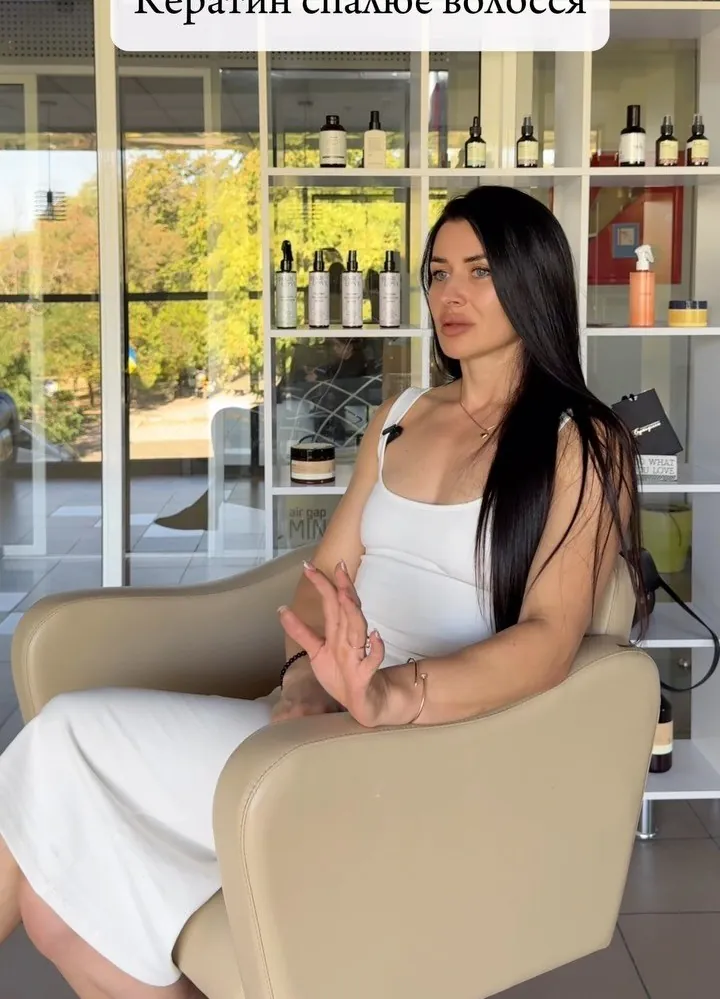

Гладке, живе, сяюче волосся - надовго
Кератин, ботокс, нанопластика та відновлення волосся. Олена Ярова підбирає процедуру під стан і структуру саме вашого волосся - і вчить майстрів робити так само.



Олена Ярова
«Якби мені знову довелося обирати, я б знову обрала волосся. Без сумнівів».
Близько чотирьох років тому Олена тільки починала шлях у beauty, а сьогодні має власну студію у Вознесенську, постійних клієнток і своїх учениць. Вона любить складні випадки - особливо пошкоджений блонд, який обіцяє «повернути до життя».
Окрім процедур, Олена розбирає домашній догляд кожної клієнтки: пояснює, що потрібно саме її волоссю, для чого кожен засіб і на чому не варто витрачати гроші.
Чотири кроки до шовку
- 01
Діагностика
Олена оцінює стан, пористість і структуру волосся, розпитує про фарбування та домашній догляд.
- 02
Підбір процедури
Кератин, ботокс, нанопластика чи спершу реконструкція - під конкретне волосся, а не «як у всіх».
- 03
Процедура
Склад, температура праски й техніка - під товщину та стан кожного пасма.
- 04
Домашній догляд
Розбір вашої полички: що залишити, що додати і на чому не варто витрачати гроші.
Процедури, які дають результат
Ціна залежить від довжини волосся. Точний розрахунок - на сторінці цін.
Кератин | Ботокс
Модифікація волосся для ідеальної гладкості, блиску й здорового вигляду. Прибирає пухнастість і полегшує щоденний догляд.
Реконструкція
Амінокислотна, ліпідна, протеїнова. Легкий візуальний ефект, але суттєво зміцнює волосся. До місяця. Ідеально після фарбування та для блонду.
Тотальна реконструкція
Холодне відновлення + гаряча реконструкція (кератин або ботокс). Блиск, гладкість і сила вже після першого сеансу.
Нанопластика, перманент
Довготривале вирівнювання навіть дуже кучерявого й жорсткого волосся. Ефект від 6 до 10 місяців.
Волосся, яке хочеться торкатися


«Моя мета - щоб після навчання з’явився ще один майстер, який задаватиме стандарти, а не наздоганятиме їх».Olena Yarova Про навчання

Корисне про волосся

Кератинове вирівнювання: як воно працює і чому важливо знати склад
Що дає кератин, звідки взялися розмови про формальдегід і які питання поставити майстру перед процедурою.

Ботокс для волосся: жодного ботулотоксину, лише глибокий догляд
Назва лякає, але уколів тут немає. Розбираємо, що насправді входить у «ботокс» і чим він відрізняється від кератину.

Нанопластика і перманентне вирівнювання: що варто знати перед процедурою
Тривале вирівнювання навіть для дуже кучерявого волосся. Що каже прайс студії і що з'ясували нефрологи щодо кислотних складів.
Готові до волосся, яке хочеться торкатися?
Напишіть Олені в Instagram: вона подивиться фото вашого волосся, порадить процедуру і підбере зручний час.